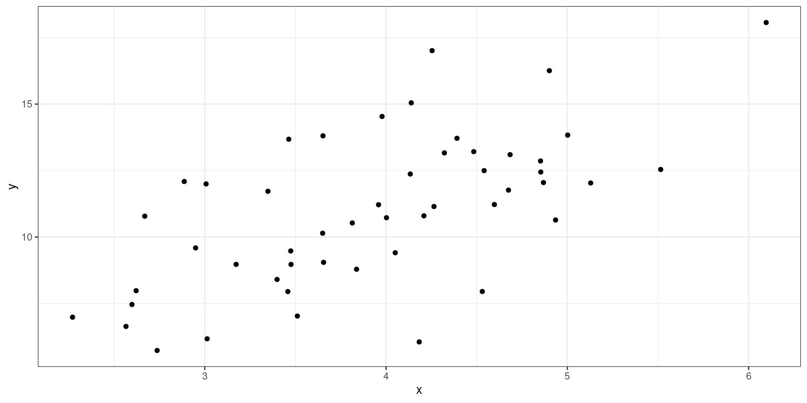

Describing the relationship between categorical and continuous variables can be done by stratifying by the categorical variable and finding the mean or median, or conducting a statistical test:
t-tests
ANOVA
Measuring the association between species and flipper length from palmerpenguins:
#>
#> Kendall's rank correlation tau
#>
#> data: body_mass_g and flipper_length_mm
#> z = 17.683, p-value < 2.2e-16
#> alternative hypothesis: true tau is not equal to 0
#> sample estimates:
#> tau
#> 0.6614597
Scatter Plot
Linear Regression
Linear Regression
Linear regression is used to model the association between a set of predictor variables (x’s) and an outcome variable (y). Linear regression will fit a line that best describes the data points.
Scatter Plot

Simple Linear Regression
Simple linear regression will model the association between one predictor variable and an outcome: